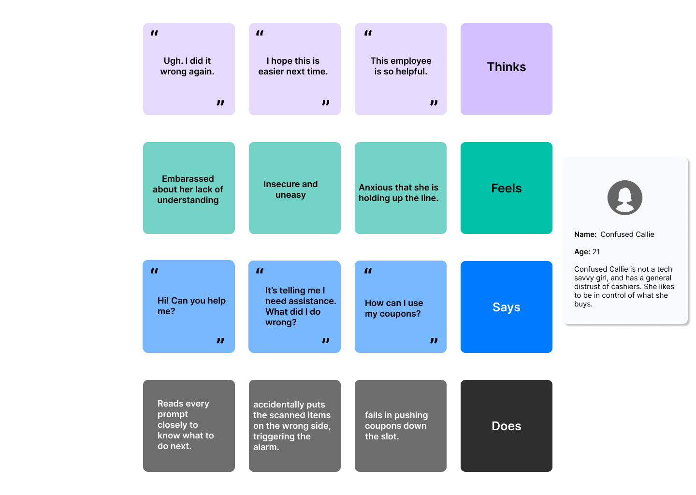

Have you ever wondered what designers had in mind when creating a project? Have you noticed inconsistencies with human intuition and the design on an interface?
In interaction design, a persona is a fictional representation of a user that helps designers understand their target audience. Personas are created based on user research and represent different user types, including their goals, behaviors, needs, and pain points.
Today, we will explore the user interface of a CVS Pharmacy self-checkout machine through the use of personas and storyboarding.
Let's start by taking a look into the setup of this interface.
Exploring the Interface
This machine aims to provide a smoother checkout for customers where they have autonomy over the purchasing process. It creates a more efficient and convenient experience for users who prefer to avoid the lines for the cashier.
Collecting Data
To understand the user experience of the CVS self-checkout machine, we conducted observations and interviews with users at a local CVS store. Here are some of the key findings:
Observations
Confident Users
- Immediately knew to scan items with no hesitation or confusion.
Uncertain Users
- Unsure where to place items, hesitated, or placed them incorrectly.
Frustrations with Checkout Process
- Annoyed by excessive prompts before payment.
- Coupons did not fit easily through the slot.
- Delays in placing coupons triggered worker assistance.
- Frustration grew while waiting for an available worker.
- Felt they might as well have waited for a cashier.
Bagging Challenges
- Limited space made organizing scanned items difficult.
- Keeping weight correct while shuffling items was challenging.
Personas
From the observations and interview responses recorded above, we can craft two distinct personas that generalize the experience of a certain type of user.
Persona 1
Running Ramon
A rushing college student at Brown University. He has to pick up toiletries from CVS before running to make a meeting on time. Ramon doesn't have time to answer the prompts on the machine and wants to get out of the store as soon as possible.
He represents the user that uses self-checkout machines for convenience and speed. He is used to the self-checkout process and doesn't generally need any help from the cashier.
Persona 2
Confused Callie
Confused Callie is not a tech savvy girl and has a general distrust of cashiers. She likes to be in control of what she buys.
She represents the user that wants to watch over their own purchase. Although she doesn't quite understand how to use the machine, she would rather this over a cashier.

Storyboard
Storyboards detail the journey of a specific persona utilizing the interface. They point out choices and actions a user may take, highlighting the successes and pain points of the interface
Confused Callie
Conclusion
This study of interaction can help us to better understand users and properly design with groups in mind. Data collection, persona crafting, storyboard building are essential components in understanding a user population and designing effective interfaces.